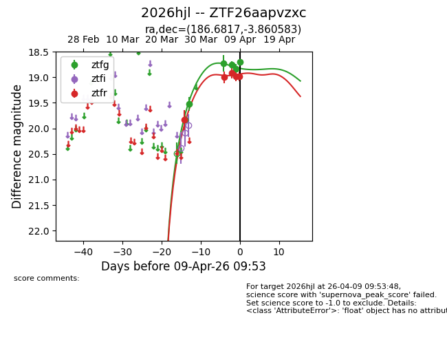
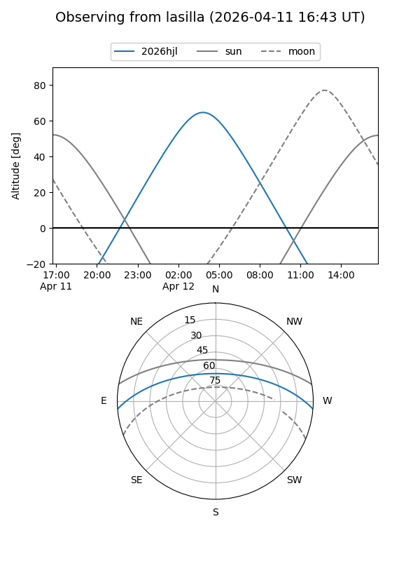
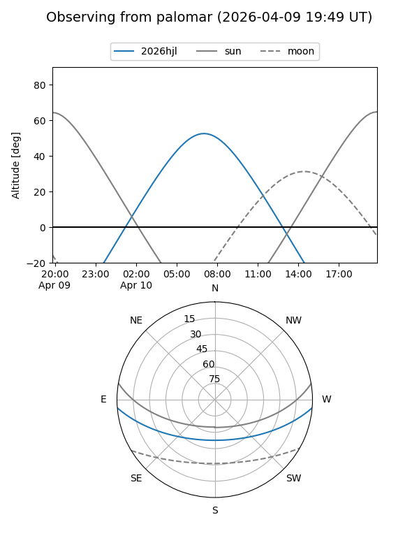

2026hjl
Target 2026hjl at 2026-04-09 10:01
Aliases and brokers:
FINK: link
Lasair: link
ALeRCE: link
TNS: link
YSE: link
alt names
ZTF26aapvzxc (ztf,fink_ztf)
2026hjl (tns,yse)
Coordinates:
equatorial (ra, dec) = 186.6817,-3.86058
equatorial (HMS+DMS) = 12:26:43.60,-03:51:38.10
galactic (l, b) = (291.0933,+58.44201)
Flags:
Photometry:
last ztfg=18.70, ztfr=18.98
5 ztfg, 5 ztfr detections
Lightcurve

Visibility


Additional plots